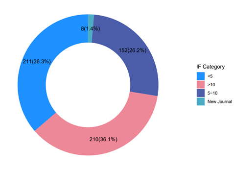
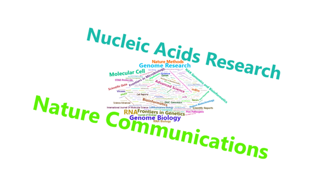

Preface
RNA regulation is central to gene expression, encompassing RNA modifications, transcript architecture, alternative splicing, and poly(A) tail dynamics. Conventional sequencing depends on cDNA synthesis, which fragments RNA and uncouples these regulatory layers. In contrast, nanopore direct RNA sequencing (DRS) uniquely enables high throughput native RNA sequencing, preserving full length transcripts, RNA modifications, and poly(A) features simultaneously. Despite rapid advances, the field still lacks a comprehensive, unified review that connects technology, computation, and applications.
This supplement to the review “Nanopore Direct RNA Sequencing and the Epitranscriptome: Toward a Complete Map of RNA Regulation” is inspired by technical field guides that aim to make a rapidly evolving technology accessible and detail to further understanding of the exhibits.
Research Highlight
Overview of nanopore direct RNA sequencing principles and evolution.
Comparative positioning of DRS versus short read, long read and modification assays.
DRS based multi layer view of transcriptome architecture and RNA regulation.
Integrated framework for DRS experiment design, library prep, analysis and benchmarking.
Future directions for multi omics integration and clinical translation of DRS.
Research on direct RNA sequencing began to appear around 2017. Based on manual curation, as of December 31, 2025, a total of 591 articles related to nanopore DRS, particularly DRS applications, methods, and algorithms, have been published, forming a medium sized but rapidly growing frontier subfield that urgently requires systematic synthesis (figure, top pannel). According to the published literature, 36% of these articles have appeared in journals with an impact factor of 10 or higher (figure, middle pannel). The papers are primarily published in leading bioinformatics and genomics journals such as Nature Communications (51 articles), Nucleic Acids Research (46 articles), and Genome Biology (16 articles) (figure, bottom pannel).
{kind=link}

{kind=link}

{kind=link}

Here, we added the Supplemental table for DRS analysis and advanced analyses enabled by DRS, and provide the corresponding code so that readers can reproduce and extend our workflows.
The example datasets and plots include:
ggsashimi plots for splicing events (Figure 7A)
time course statistics of alternative splicing (Figure 7B)
IGV based APA visualization at the genomic locus level (Figure 7C)
joint analysis of alternative splicing and poly(A) usage (Figure 7D)
association between poly(A) tail length and gene expression (Figure 7E)
heatmaps of poly(A) tail length across samples or conditions (Figure 7F)
relationships between RNA modification levels and TPM (Figure 7G)
radar plots of motif composition of modification sites across groups (Figure 7H)
density distributions of modification sites across gene functional regions (Figure 7I)
visualization of functional enrichment analysis (Figure 7J)
SQANTI3 style summary statistics of transcript structural annotation (Figure 7K)
bar plots of counts of differential features (e.g., genes, isoforms, or poly(A) events; Figure 7L)
The markdown that generates this text is on GitHub, and is version controlled so that its development can be tracked now and in the future. Please notify us of errors, omissions, or other suggestions via submission of issues on GitHub: https://zhangtianyuan666.github.io/DRS_doc. To submit new entries to the database, please contact zhangtianyuan@foxmail.com. If the text in some figures are too small to read, then right click on the figure to open in a new tab to zoom in.